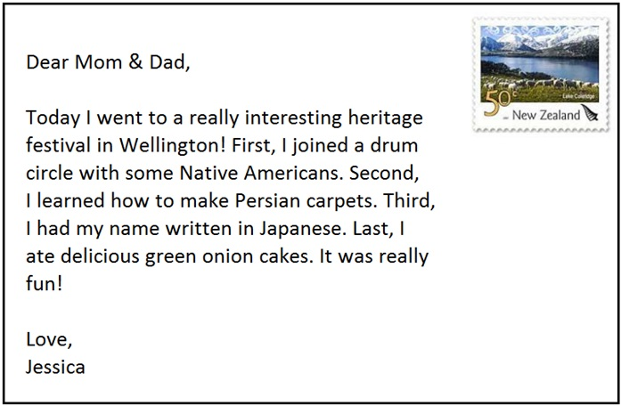

Questions 1 through 3 refer to the following short talk: 00:00 00:00 01:21 |
| Hi, everybody. My name is Alice and I am an alcoholic. Thanks for giving me a chance to speak with you all today. I have found all your stories inspiring so far, and it's good to know that there are others out there suffering from the same affliction as me. I had a really tough childhood. My parents divorced when I was one, and I don't remember even meeting my dad. My mother was also addicted to alcohol. The first time I snuck some booze from her was when I was twelve. By the time I was fourteen, I was drinking five nights per week. Then when I was sixteen, my mother drank herself to death. I was so depressed that I started drinking non-stop, and this went on for a couple years. Everything changed a few months ago when I got behind the wheel after a whole day of drinking. I ran into a teenage boy, but luckily, he survived. Because it was my first offense and the boy's family didn't want to press any charges, I didn't have to do any jail time. I lost my car and license though, and now I have to attend this class, but I am grateful for it. I am on the road to recovery. 嗨，大家好。我是Alice，我是酒精中毒患者。謝謝今天給我和大家分享的機會。我發現到目前為止你們所有人的故事都非常令人深省，知道外面還有人和我遭受一樣的折磨是很欣慰的事。我有一段十分艱辛的童年。我的父母在我一歲時離婚，我甚至不記得看過父親。媽媽也對喝酒成癮。我第一次從她那裡偷酒時，我才十二歲。到十四歲時，一週裡有五晚我都在喝酒。十六歲時，我媽酒精中毒而死。我非常地沮喪而開始不停地喝酒，一直維持了好幾年。幾個月前一切都變了，我喝了一整天酒後駕車上路撞上了一位青少年，幸運地他還活著。因為那是我第一次犯錯，因此男孩的家人並沒有提出告訴，我不需要服刑。雖然我失去了車子及駕照，又必須參加現在這堂課，但我非常地感激。我現在正在戒酒中。 |
Questions 4 through 6 refer to the following short talk:  00:00 00:00 01:03 |
|
| Ladies and gentleman, boys and girls, New Zealand folk and visitors from abroad, welcome to the Wellington Heritage Festival, the best festival of its kind south of the equator! This year's festival features tents highlighting the people and cultures of 82 countries in the world. That's right, 82! Nearly half the countries of the world, and more than 90% of the world's population, is represented here today. Each of the tents includes cultural displays, delicacies from that country, and performances such as dancing and singing. Snacks can be purchased with tickets only, which can be purchased from many ticket stalls dispersed throughout the grounds. Just to name a few of the possible activities: get your name written in Japanese in the Japan tent, join a Native American drum circle at the United States tent, or learn how Persian carpets are made at the Iran tent. 各位先生小姐們，男孩和女孩，紐西蘭居民和外國旅客們，歡迎來到威靈頓文化遺產慶典- 南半球最棒的慶典！ 今年的特色在於我們有世界上八十二個國家的人文風情帳篷。沒錯，八十二個！幾乎地球上所有國家的半數，超過世界人口90%都可以在慶典中看到。每頂篷帳都包含文化展覽、各國佳餚及歌舞表演。食物只能用園區內購票亭裡販賣的票券購買。先透漏一些可能會舉辦的活動：日本帳篷裡有日文姓名書寫活動、可參加美國帳篷裡原住民打鼓活動、或去伊朗帳篷學習怎麼編織波斯毯。
|
Questions 7 through 9 refer to the following short talk: 00:00 00:00 00:57 |
| I guess this will be the last time that I see all of you together like this. But since my retirement officially starts in about 45 minutes, I can't say that I even plan to step foot into this office again. Nope, now that I am a free man, I plan to focus much of my time and energy on maintaining two things: my health, and my garden. And of course, I'm truly looking forward to spending more time with my granddaughter Amy and grandsons Jed and Durban. I may be getting old, but that doesn't mean I haven't kept up with the times. I've set up a personal blog for anybody who cares enough about my ramblings to read up on them now and then. I'll be sharing my thoughts and feelings about this new yet exciting chapter of my life. 我想這會是最後一次我像這樣子看你們聚在一起。但自從我的退休在45分鐘後正式生效，我不能說我會再跨進辦公室。不，現在我是一個自由人，我計畫將大部分的時間及精力用來維持兩件事情：我的健康及我的花園。當然，我真的很期待能多花點時間和孫女Amy及孫子Jed與Durban相處。我也許會變得更老，但這不代表我會跟不上時代。我為了那些有時想回憶一下我的金玉名言的人設立了個人部落格。我會和大家分享我對這個嶄新又興奮的人生篇章的想法以及感覺。 |
Questions 10 through 12 refer to the following short talk: 00:00 00:00 01:00 |
| Wow, what a performance! Everybody give a round of applause for Abeena Karymantang and her lovely rendition of Janet Jackson's Rhythm Nation. Now, let's see what our panel of judges thought of it. I see an 8.9, 9.1, and a 9.0, which is a total score of 27, and which also means that Karymantang is in the top spot so far tonight! Now she just has one more challenger, who will deliver our final performance of the night! I can feel the anticipation in the air! Our last performer comes to us all the way from Yamoussoukro, the capital of Ivory Coast. Instead of doing a cover as all of the other contestants have, he is making a bold move by choosing to sing a song that he himself composed. Alright, people, put your hands together for Stephane Condeh! 哇喔，多麼棒的表演！大家為Abeena Karymantang以及她翻唱Janet Jackson的Rhythm Nation的美好演出熱烈的掌聲，現在，來看看評審們給的評分。我看到8.9、9.1及9.0，總共27分，這也代表Karymantang是今晚目前為止的最高得分者！現在她只剩一位挑戰者，這位將會獻上我們今晚的最後一場演出。我可以感覺到大家的期待！我們最後一位表演者遠從象牙海岸的首都，亞穆蘇克羅而來。他不像其他參賽者翻唱其他歌手歌曲，相反地，他很勇敢地決定唱自己作詞作曲的歌曲。好的，各位，準備鼓掌歡迎Stephane Condeh！ |
Questions 13 through 15 refer to the following short talk: 00:00 00:00 01:16 |
| I hope you don't mind if I tell you a little story about how I got into this profession. Don't worry. I'll keep my eyes on the road. Anyway, I didn't always used to be a cab driver. No, I actually studied marine biology in uni. Can you believe it? Marine biology! I was at the top of my class every semester and my future was ahead of me. But all my plans came crashing down when I was doing my internship. I was placed in a marine research lab on the coast of Belgium. We were gearing up to do a dive to the ocean floor to search for some rare crustaceans. That's when I saw it coming for me. Yep. A ray. Rays can kill you, you know. I panicked and tried to reach the surface as quickly as possible, which is not safe. The air in my lungs expanded too quickly and I burst one of my lungs. I nearly died. Ever since then, I've been terrified of the sea. Then, for several decades, I went into teaching. Finally, I decided I wanted to be out on the streets for my last few years of employment, where I can meet all kinds of people. Hey! Are you dozing off? 希望你不介意我告訴你我怎麼選擇這職業的一則小故事。不用擔心，我會持續注意路況。總之，我並不是一直都是計程車司機。事實上，我在大學時攻讀的是海洋生物學。你相信嗎？海洋生物學！每學期我都是班上的第一名，我的未來一片光明。但我所有的計畫都在實習時幻滅了。我當時被安置在比利時海岸的海洋研究實驗室。我們本來潛入海洋底部去尋找一些稀有的甲殼綱生物。當時我看到牠們游過來。沒錯，一隻魟魚，魟魚可以致死，你知道。我很恐慌並試圖盡快地游向海面，但那不安全。我肺裡的空氣擴張太快，我傷到了其中一個肺。我差點死掉。自從那次之後，我對海洋感到恐懼。之後幾十年來，我轉成教職。最後，我想在退休前幾年到街道上來工作，街道上是個我可以碰到各式各樣的人的地方。嘿！你在打瞌睡嗎？ |
Questions 16 through 18 refer to the following short talk:
00:00 00:00 01:12 |
|
| Do you find that you have trouble keeping up with technology? Do you have a smartphone but feel like you don't even know how to use most of its functions? Well, you are not alone. According to a recent study, 60% of smartphone owners use less than half of the features on their phones. What's more, 45% of smartphone owners report feelings of frustration with their phones that bring unnecessary stress to their daily lives. That's why Samsonic has come up with the world's first simplified smartphone, the EASYPHONE. Forget about pages upon pages of apps and lists of settings that might as well be written in Chinese. The EASYPHONE comes with three functions, and that's it: E-mail, telephone, and Facebook. That's right, no silly games, no difficult-to-use camera, no passwords that you will forget, and no complicated formulas for doing what you need to do. Just hit the only button on the phone, choose one of the three options, and there you go. Get the EASYPHONE and make your life easier today. 你有發現自己跟不上科技潮流嗎？你有智慧型手機但卻不知道大部份的功能怎麼使用？其實，你不是唯一一個。根據近期的研究顯示，60%的智慧型手機使用者只使用了手機上不到一半的功能。再來，45%的智慧型手機使用者表示手機對於他們的日常生活帶來了非必要性的壓力及挫敗感。這就是為什麼Samsonic會發明出世界上第一支簡易型智慧型手機- EASYPHONE。拋下那些一頁又一頁的手機app，還有就像是中文字一樣難懂的設定功能表。EASYPHONE有三項功能：電子郵件、電話以及臉書。沒錯，沒有愚蠢的遊戲，沒有難用的相機，不用輸入會忘記的密碼，也沒有你必須使用但卻複雜難用的程序。只要按下手機上唯一的按鍵，選擇三選項的其中之一，就可以了。使用EASYPHONE，讓你的生活更容易。
|
Questions 19 through 21 refer to the following short talk: 00:00 00:00 00:55 |
| Good evening! You have reached Bistro 91, home of Chef Nam Bach, innovator of Manhattan's finest Indochinese cuisine. Famous for his fusion of Southeast Asian and American classics, Bach has been called "the greatest thing to happen to American cuisine since sliced bread." Bistro 91 offers an intimate, candlelit eating environment. We are open Friday and Saturday nights from 5 to 9 PM and by reservation only. We serve a set menu and don't cater to special diets. Wine and other aperitifs are available. Reservations are subject to availability and our typical waiting list is three months or longer. Please leave your name, number, size of your party, and desired reservation date. If you don't hear back from us within three days, that means we were full on your date of choice. Thank you. 晚安！你已抵達Bistro91，廚師Nam Bach之家，曼哈頓最棒的東南亞菜色創新者。我們以融合東南亞及美國經典菜色聞名，大廚Bach被稱為「自切片麵包後，美式料理最棒的事情。」Bistro91提供一個燭光浪漫的舒適用餐環境。我們的營業時間是週五及週六，晚上5點到9點且須事先預約。我們提供套餐菜單且不為特殊要求而更改菜色。我們也供應紅酒及其他酒精類飲品。能否預約取決於是否有空位而通常我們預約已排到三個月後或更久。請留下你的大名、電話號碼、與餐人數及希望的預約時間。如果你三天內還未收到我們的回覆，這表示你希望的時間都已客滿。謝謝你。 |
Questions 22 through 24 refer to the following short talk: 00:00 00:00 00:58 |
| This breaking news just in: There has been an assassination attempt on the president. I repeat. There has been an assassination attempt on the president. The attempt occurred in the makeup room of the McCarthy Stadium only moments before the president was due to come out on the stage to give the welcoming address for the 19th National Games opening ceremony. The makeup room was heavily guarded by the president's personal bodyguard unit, so speculations are already being made that it was an inside job. Police have released very little information as of yet. We do not know whether the suspect is in custody or still at large. We will interrupt all normal programming tonight to keep you updated on the situation. Now we will go to a live report from Bruce Cunnings, who is standing outside the stadium grounds. 頭條新聞插播：有人試圖暗殺總統。重複：有人試圖暗殺總統。這場事件發生在麥克卡爾西體育館的休息室，就在總統將離開休息室上台為第十九屆國家體育賽事開幕典禮致歡迎詞前一刻。休息室被總統的私人保鑣層層把關，所以已推測出有內賊。目前為止，警方提供的消息非常少。我們不知道嫌疑犯已被逮捕或是依舊追緝中。我們將會停止今晚所有已預排的節目來為你持續更新狀況。現在我們將請正待在體育館外的Bruce Cunnings進行現場轉播。 |
Questions 25 through 27 refer to the following short talk: 00:00 00:00 00:40 |
| Now, I know you guys have all been fearing the worst, but I assure you that you need not worry. It's true that the company will be downsizing in the year to come. It's also true that some major changes are coming. Employees will be transferred, departments will be combined, policies will be amended, and products will be phased out. But what I can tell you right now with absolutely certainty is that no positions will be cut. You guys are safe here, and so long as you keep putting in a good effort and fulfilling your obligations to the company, then we are honored to have you as a part of our team. 現在，我了解你們都在擔心最糟糕的狀況，但我向你們保證你們並不需要擔心。公司明年確實會進行縮編。且會有一些重大的改變也是真的。人事調動，部門合併，政策修改，商品會被逐步淘汰。但我現在要告訴你的是，我們絕對保證沒有任何人員會被裁撤。你們在這裡很安全，且只要你持續的付出，並盡到你對公司的義務，那我們對你身為團隊一份子而感到榮幸。 |
Questions 28 through 30 refer to the following short talk: 00:00 00:00 01:06 |
| A major water crisis is gripping the country of Bangladesh, which is surprisingly one of the wettest countries on Earth. Bangladesh, located between the South Asian nations of India and Myanmar, is one of the most densely populated countries in the world. The landscape of the country is dominated by the Ganges River, which splits into many branches before reaching the sea. However, after its long journey from the Himalayas and through India, the Ganges is so polluted that its water is not safe for human consumption. 60% of the people in Bangladesh have no access to safe drinking water. During the monsoon season, Bangladesh experiences heavy rainfall; however, the country lacks adequate infrastructure to save some of that water for the dry season. Furthermore, 80% of the available water is used for agriculture. What Bangladesh needs most is better infrastructure for preserving their water supplies for times of need. 嚴重的水資源危機正在孟加拉共和國發生，令人意外的是孟加拉是地球上水資源最密集的國家之一。孟加拉，位於南亞國家印度及緬甸之間，是世上人口密集度最高的國家之一。恆河貫穿國家的領土，在入海前分道成許多支流。然而，經由喜馬拉雅山發源後流經印度的這段漫長旅程後，恆河受到高度污染，對人類飲水來說，水質不再安全。60％的孟加拉人民沒有管道取得安全的飲用水。雨季期間，孟加拉會經歷豪大雨；然而，國家缺乏適當的基礎建設來為旱季儲存水源。再者，80％的可用水都被用在農業上。孟加拉最需要的是加強基礎建設以便所需時可保存水資源。 |